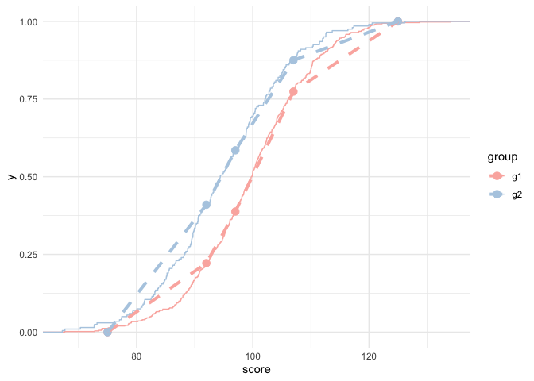

Estimating important things with public data
Contents
Intro
One of the neatest things I’ve learned about in the last few years is how to estimate effect sizes from coarsened data. The original article discussed using the method with publicly available data reported by statewide education agencies, and that’s the approach I’ll use here too. But more generally, the method could be applied in any situation in which a continuous distribution is reported out in ordinal bins.
Background
In case you’re unfamiliar, states administer tests to students at the end of the year in each of Grades 3-8, and once in high school, for all students in their state in English/Language Arts and Mathematics. Science assessments are also administered, but not across all grades. States report, for every school in their state, the percentage of students scoring in each of (usually) four proficiency categories. Sometimes these are given labels, like “Below Expectations”, “Nearly Proficient”, “Proficient”, and “Exceeds”, and other times they just have a numerical label from 1-4. These data are reported for every school in the state, and disaggregated by student demographics such as race/ethnicity, special education status, etc., provided there is a sufficient amount of data to ensure individual students cannot be identified (and this lower threshold varies by state).
While these data are somewhat helpful on their own, they’re actually not as helpful as one might think. The primary problem is that the percentage of students in each of these categories depends a lot on the placement of the cut scores delineating the different categories, and those cut scores vary not only by state, but by grade-level. Any direct comparisons that are not in the same grade, during the same academic year (because the cut scores can change from year to year), and in the same content area are therefore tenuous (see Ho, 2008 for a discussion of just how tenuous comparisons can be). But, it’s an awful lot of data that we don’t want to just throw out. The fact that this data is reported by demographic groups is particularly intriguing, given that long-standing racial achievement disparities have been found, dating back to the Coleman report. Evaluating achievement disparities at this scale could lead to new insights (and indeed, this has been done; for example, see recent work by Reardon, Kalograides, and Shores). But how do we make sense of the data, after I’ve just discussed the problems with direct comparisons in terms of percent proficient? Enter $V$, an effect size like metric estimated from ordinal data.
Effect sizes from ordinal data
First, what’s an effect size? There are many different types of effect sizes, but the most common is Cohen’s $D$, which is just the difference between the means of two respective distributions, divided by their pooled standard deviation (see Lakens, 2013 for a nice review of effect sizes). This implies we have a standardized mean difference measure. So, a value of 0.5 would imply that the focal distribution is, on average, half a standard deviation higher than the reference distribution. Effect sizes are useful for lots of different reasons, but primary among them is that they are comparable across studies and different scales (under certain assumptions, and occasionally it won’t work well, but generally it works well enough). If we could report our ordinal percent proficient data in terms of an effect size, then all of the sudden we could make comparisons between student groups across grades and even across states, even if they don’t use the same test.
A made up example
We’re going to start with a made-up example. To make this most clear, I think it’s actually helpful to start out with continuous data and then bin it manually. I’ll use the tidyverse throughout, so I’ll first load that. I’ll also set my ggplot theme to minimal, which is my favorite when I’m exploring and not trying to make things uber beautiful.
library(tidyverse)
theme_set(theme_minimal())
Now, we just need to simulate some data. I’ll simulate data for two groups, assuming both are distributed normally, with the first having a mean of 100 and standard deviation of 10. The second will have scores, on average, half a standard deviation less than the first (so 5 points). To keep things simple, I’ll make the standard deviation the same (although in principle they can be different). We’ll simulate 500 students in the first group and 200 in the second, then put it together in a data frame. I’ll also set a seed so the results are reproducible.
set.seed(8675309)
g1 <- rnorm(500, 100, 10)
g2 <- rnorm(200, 95, 10)
d <- tibble(id = 1:700,
group = c(rep("g1", 500), rep("g2", 200)),
score = c(g1, g2))
d
## # A tibble: 700 x 3
## id group score
## <int> <chr> <dbl>
## 1 1 g1 90.0
## 2 2 g1 107.
## 3 3 g1 93.8
## 4 4 g1 120.
## 5 5 g1 111.
## 6 6 g1 110.
## 7 7 g1 100.
## 8 8 g1 107.
## 9 9 g1 106.
## 10 10 g1 109.
## # … with 690 more rows
To confirm our simulation has worked, let’s first just look at the density of the two distributions
ggplot(d, aes(score)) +
geom_density(aes(fill = group), alpha = 0.6, color = "white") +
scale_fill_brewer(palette = "Pastel1")

And sure enough, the g2 distribution peaks just about 5 points below the g1 distribution.
We can also look at these by their empirical cumulative distribution functions with very little changes to the plotting code.
ggplot(d, aes(score)) +
stat_ecdf(aes(color = group), size = 1.3) +
scale_color_brewer(palette = "Pastel1")

And again you can see a relatively constant difference between the to distributions, with approximately a 5 point horizontal difference at most points in the scale.
What’s interesting, however, is that if we extract the y-values for each curve, and match them based on their x-values, we’ll end up with what looks an awful lot like a ROC curve. The mechanics here are a bit complicated, but essentially we just have to compute the empirical cumulative distribution function (ECDF) for each, then match them.
g1_ecdf <- d %>%
filter(group == "g1") %>%
pull(score) %>%
ecdf()
g2_ecdf <- d %>%
filter(group == "g2") %>%
pull(score) %>%
ecdf()
matched_d <- tibble(range = 60:140,
g1_cdf = g1_ecdf(range),
g2_cdf = g2_ecdf(range))
matched_d
## # A tibble: 81 x 3
## range g1_cdf g2_cdf
## <int> <dbl> <dbl>
## 1 60 0 0
## 2 61 0 0
## 3 62 0 0
## 4 63 0 0
## 5 64 0 0
## 6 65 0 0
## 7 66 0 0
## 8 67 0 0
## 9 68 0.002 0.01
## 10 69 0.002 0.01
## # … with 71 more rows
The first two blocks of code above create functions that return the y-value for the corresponding group. The matched_d part reports the cumulative density for each group across the score range 60 to 140. Now, we can plot the curves against each other.
ggplot(matched_d, aes(g1_cdf, g2_cdf)) +
geom_line(color = "cornflowerblue", size = 1.4) +
geom_abline(linetype = "dashed", color = "gray30")

In the above, if there was no difference between these two groups, the line would follow the dashed line perfectly. To the extent that the matched CDFs diverge from the reference line, there is a difference in the distributions. We can even calculate the area under this curve, which is itself and effect size like metric. I like to use the pracma R package to do this, with the trapz function for trapezoidal integration, which seems to work better overall (in my experience), than other integration techniques.
library(pracma)
auc <- trapz(matched_d$g1_cdf, matched_d$g2_cdf)
auc
## [1] 0.63065
In this case, the area under the curve is directly interpretable as the probability that a randomly selected observation from the x-axis (group 1) would have a higher value than a randomly selected observation from the y-axis (group 2). But it’s more than just that. In the Ho and Reardon paper referenced in the first sentence of this post, they outline the following formula
$$ V = \sqrt(2)\Phi^{-1}(P_{a>b}) $$
which looks fairly complicated, but really isn’t that bad. The $P_{a>b}$ is just the area under the curve we calculated above and $\Phi^{-1}$ is the equivalent of R’s qnorm function, which walks a probability value back to a quantile score (e.g., qnorm(0.975) = 1.959964). So really, we just call qnorm the AUC value we just calculated, and multiply the result by the square root of 2. Why would we do this? Because it puts the AUC value on a standard deviation scale and, under the condition of respective normality, is actually equivalent to Cohen’s $D$. In R code, and assuming we have created an object called auc, as above, the formula for $V$ looks like sqrt(2)*qnorm(auc), which gives us a value of 0.4717468. Using the esvis package, we can compare this to Cohen’s $D$
library(esvis)
coh_d(d, score ~ group, ref_group = "g2")
## # A tibble: 1 x 4
## group_ref group_foc coh_d coh_se
## <chr> <chr> <dbl> <dbl>
## 1 g2 g1 0.460 0.0846
And as you can see, they are very close.
Ordinal data
Why do we do all the gymnastics above if we can use Cohen’s $D$ to get, essentially, the same answer? In some ways, $V$ is preferable to Cohen’s $D$, because it rests on fewer assumptions. But more importantly, we can use the method even when all we have access to is ordinal data reported as the percentage of people in each of $n$ categories, as is required by statewide testing agencies, but also common in other areas (e.g., underweight, normal, overweight, or obese for various body-mass index (BMI) ranges). We can do this because we can use the percentage of respondents in each category to approximate the ECDF for each group, match these curves, calculate the area under the curve, and then transform it to an effect size. This all makes intuitive sense, but let’s prove this to ourselves.
Coarsening the data
I’ll make up three cut scores to define four performance categories: 92, 97, and 107. Note that these are purposefully not evenly spaced, as is common in statewide testing, but some basic simulations I’ve conducted in the past suggest that the better the spacing, the better the ECDF approximation will be (which again, makes intuitive sense).
d <- d %>%
mutate(category = case_when(score < 92 ~ 1,
score >= 92 & score < 97 ~ 2,
score >= 97 & score < 107 ~ 3,
score >= 107 ~ 4))
d
## # A tibble: 700 x 4
## id group score category
## <int> <chr> <dbl> <dbl>
## 1 1 g1 90.0 1
## 2 2 g1 107. 4
## 3 3 g1 93.8 2
## 4 4 g1 120. 4
## 5 5 g1 111. 4
## 6 6 g1 110. 4
## 7 7 g1 100. 3
## 8 8 g1 107. 3
## 9 9 g1 106. 3
## 10 10 g1 109. 4
## # … with 690 more rows
Now let’s quickly look at the proportion in each category by group
props <- d %>%
group_by(group) %>%
count(category) %>%
mutate(prop = n/sum(n)) %>%
select(-n) %>%
spread(group, prop)
props
## # A tibble: 4 x 3
## category g1 g2
## <dbl> <dbl> <dbl>
## 1 1 0.222 0.41
## 2 2 0.166 0.175
## 3 3 0.386 0.290
## 4 4 0.226 0.125
Ho and Reardon outline a number of different ways to approximate the ECDF, but we’ll stick with the simplest “connect the dots” method. Let’s look at how the ECDF for the full data compares to our approximation using just the data shown above.
props_plot_d <- props %>%
mutate(score = c(92, 97, 107, 125))
bottom <- tibble(category = 0, g1 = 0, g2 = 0, score = 75)
props_plot_d <- bind_rows(bottom, props_plot_d) %>%
mutate(g1 = cumsum(g1),
g2 = cumsum(g2)) %>%
select(score, g1, g2) %>%
gather(group, prop, -score)
ggplot(d, aes(score)) +
stat_ecdf(aes(color = group)) +
geom_point(aes(y = prop, color = group), data = props_plot_d,
size = 3) +
geom_line(aes(y = prop, color = group), data = props_plot_d,
linetype = "dashed",
size = 1.4) +
scale_color_brewer(palette = "Pastel1")

As you can see from the above, it’s not perfect, but it’s pretty close!
To estimate $V$ from the coarsened data, then, all we need to do is transform the proportions into cumulative proportions, and compute the integral.
props %>%
mutate(cdf_g1 = cumsum(g1),
cdf_g2 = cumsum(g2))
## # A tibble: 4 x 5
## category g1 g2 cdf_g1 cdf_g2
## <dbl> <dbl> <dbl> <dbl> <dbl>
## 1 1 0.222 0.41 0.222 0.41
## 2 2 0.166 0.175 0.388 0.585
## 3 3 0.386 0.290 0.774 0.875
## 4 4 0.226 0.125 1 1
But the above has a small problem. If we compute the integral here we’ll miss out on a fair bit of the curve because we have not included zero. There’s a few ways to do this and I’m taking a not very general but easy way here.
zero <- tibble(category = 0, g1 = 0, g2 = 0)
props <- props %>%
bind_rows(zero) %>%
arrange(category) %>%
mutate(cdf_g1 = cumsum(g1),
cdf_g2 = cumsum(g2))
props
## # A tibble: 5 x 5
## category g1 g2 cdf_g1 cdf_g2
## <dbl> <dbl> <dbl> <dbl> <dbl>
## 1 0 0 0 0 0
## 2 1 0.222 0.41 0.222 0.41
## 3 2 0.166 0.175 0.388 0.585
## 4 3 0.386 0.290 0.774 0.875
## 5 4 0.226 0.125 1 1
Now let’s compute the AUC.
trapz(props$cdf_g1, props$cdf_g2)
## [1] 0.62175
and transform it to $V$
sqrt(2)*qnorm(trapz(props$cdf_g1, props$cdf_g2))
## [1] 0.4385196
And there we are. Again. Not perfect, but pretty darn close! We could, of course, go on to do some simulations, in which case we would find that the difference between $V$ and $D$ averages zero. I’ve done these sorts of comparisons with empirical data as well (see here for example). But this is probably long enough as is.
Thanks for reading!